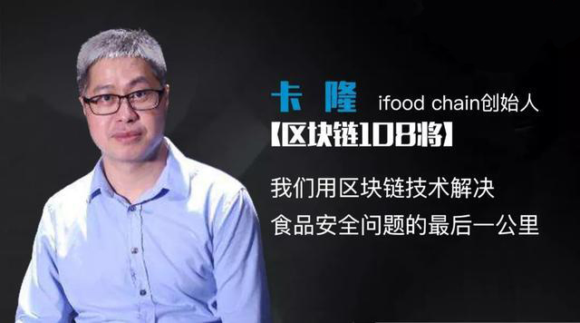
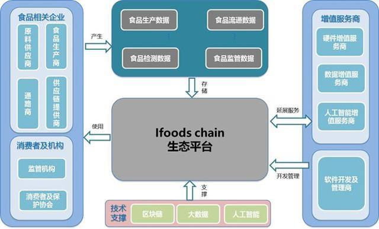
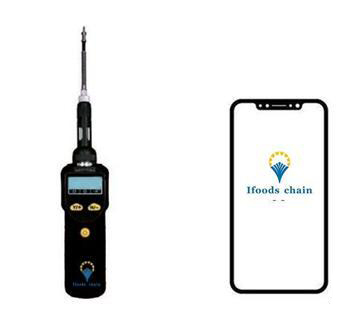

对话卡隆：我们用区块链技术解决食品安全问题的最后一公里
2017.7.7
2008年12月27日，震惊全国的“三聚氰胺奶粉”案将食品安全问题推向了舆论风口。而在随后的数年间，地沟油、瘦肉精、工业明胶、甜蜜素、毒生姜……这些食品安全问题事件被一一曝光。
食品安全问题的严峻形势不只是在中国，从1996年英国的“疯牛病”到2008年美国花生食品处理厂发生的沙门氏菌污染，再到2013年席卷欧洲的马肉事件……国际上的食品安全问题也未曾间断。

近年来，随着多方努力，食品安全环境较过去有所改善，再全球范围内虽然没有发生大规模食品安全事故，可见食品安全问题依旧存在。
为了解决这一问题，Ifoods chain应运而生，致力于通过区块链底层技术，为食品领域在生产、流通、消费、检测、追溯等食品供应问题上提供解决方案，成为一个开源、开放式的食品及相关领域的区块链生态平台。
区块链将如何应用于食品安全领域？
2012年，卡隆离开了从业十几年的公关行业，开始在金融领域和农业领域创业。这一年，他还以执行秘书长的身份参与了青少年食品安全知识竞赛的举办，而这个比赛，给了他极大的触动。
“我发现孩子们对食品安全真的一无所知。小孩子应该至少建立对身体自我保护的机能，这就像语言一样，需要教育，我们应该从小就培养小孩子关心自己的身体，吃什么对身体好，吃什么对身体不好。”
虽然青少年食品安全知识竞赛因为种种原因没有继续办下去，但卡隆却一直留在了食品行业。如今他已经在食品行业呆了近十年，也亲眼目睹并参与了从业者们在食品安全问题上的努力。
耳朵财经了解到，在此前，食品安全问题之所以难以控制，首先就是能让大家互相信任的机制没有建立起来。由于食品领域涉及很多方面，从食品的原料供应、食品的生产、食品的流通及过程中涉 及到的供应链条、各种食品类企业、硬件企业等，面临的诸多痛点都亟待解决。
而区块链作为一种公共的、分布式的账本，与中心化记录方式不同的是，其数据来源单一，数据记录具有一致性（通过在所有节点同时记录数据实现），从而可以在各个环节创建更清晰的追踪渠道。
因此通过使用区块链，食品公司可以更迅速地追溯到食品问题的源头。这不但可以帮助降低消费者风险，提供安全保障，还可以通过有针对性的召回来降低财务损失。
而如今，作为Ifoodchain的第一发明人，卡隆的手里已经累积多项区块链相关专利及软件著作权。
建立食品行业内部的信任、实现全球食品安全信息共享
2013年12月，央行发布了《关于防范比特币风险的通知》，这个通知让卡隆注意到了区块链技术，这也为Ifoods chain的出现埋下了伏笔。
在食品行业创业的这些年里，卡隆了解到，“对于食品企业来说，特别是大型食品企业，他们是最不愿意出现食品安全问题的，但企业越大，采购和物流部分也就越难管理，很多食品企业的产品还要面临被假冒的情况。”
事实上，早在2012年，食品安全追溯机制就已经被强制推行，追溯方法主要是二维码溯源。即将食品的每一个环节信息都录入到系统上，然后用户通过二维码查询食品的来源、运输和其他信息。
但二维码很容易被假冒。越好的品牌，产品越容易被假冒，食品企业到最后还是要面临被消费者投诉的问题。
而问题还不局限于被假冒，二维码溯源首先需要消费者去主动扫描才能追溯食品来源，但当时的消费者还没有完全培养期扫描食品的消费意识，因此即使企业购买了溯源系统，实际的可利用率却很低。
在食品安全生态建设中，数据的不可篡改是其中的关键。以往传统的存证证明并不严格，因为这些证据都是非常容易被伪造和销毁的。
区块链技术恰巧能够解决这一问题。当食品公司将连接于物联网的标签贴到货物上，每批货物都分配一个唯一的标识号码，那么通过这些标识码可以记录产品的来源、加工信息、存储温度保质期及其他信息。记录存证的整个过程公开透明，无需任何第三方的介入便能证明该信息的真实性。
由于食品行业是全球流通的行业，通过区块链各方可以获得一个透明可靠的统一信息平台，可以实时查看状态，降低物流成本，追溯物品的生产和运送整个过程，从而提高供应链管理的效率。当发生纠纷时，举证和追查也变得更加清晰和容易。

Ifoods chain 的生态结构图
据了解，大型且自身内部流程本身已较为科学且系统化的食品公司存在利用区块链提升产品可溯源性的动机，加入相关区块链后，可降低以上痛点情况发生时被错杀的概率。
同时，食品产业的区块链平台有助于链接食品产业链上相关环节企业和商业主体，最终有助于整体全球食品供应链的质量提升，减少食品产业链的相关不对称性。
在供应链的每个阶段，都可以被记录到区块链系统当中，以便随时随地获取产品及其历史记录的实时数据。
研发超级探针、致力于解决食品安全问题的最后一公里
“我看到央行的通知之后，就专门研究了一下，发现它的底层区块链技术，能帮食品行业做很多事情。”2015年底，卡隆开始组建团队，致力于解决食品安全的最后一公里。

超级探针和移动端示意图（作为Ifoods chain的核心硬件，本身的体积很小，方便随身携带。）
卡隆告诉耳朵财经，Ifoodschain的核心作用有三个，1、提升检测效率，2、提升食品生产力，3，降低食品行业损害。
而以上所有溯源行为的发生，都要基于能够解决食品安全问题的最后一公里上。也就是说，只有消费者测量了食品，才能产生包括溯源、监督、大数据在内的其他作用。
超级探针的研发就是基于这最后一公里。在卡隆看来，当超级探针能够准确便捷高效的检测出食品问题，那么每个人手里都有一个超级探针，就是理所应当的。因为食品安全涉及的是全家人的健康问题。
以牛肉为例，首先肉的质量是很难用肉眼看出问题的，所以当消费者去超市买牛肉的时候，就可以先用探针测一下，探针通过测量分析，最后反馈到手机上检测结果，它告诉你这个牛肉有没有注水、含不含瘦肉精等等。
据了解，目前牛肉检测是在 Ifoods chain 区块链生态平台的第一个应用，在团队的核心开发人员中，已经70岁的美国乔治亚大学食品学博士、美国纽利味食品集团中国区总裁林汝吉博士，也在其中。
据透露，超级探针的demo将在今年6月推出，预计在9月，超级探针将完成测试迭代正式上线。
总结
Ifoods chain的团队希望能做一个开源、开放式的食品及相关 领域的区块链生态平台。
而在2017年8月，世界上最大的10家零售及食品供应商与IBM达成合作，将区块链整合到其供应链中，从此，食品供应商追溯原料成分将可以更快速。
这十家公司包括沃尔玛、雀巢、联合利华、麦考密克、泰森、克罗格、麦克莱恩、德里斯科尔、多尔和金州食品，它们的年度全球销售额总和超过五万亿美元。这似乎也证明了，区块链对于食品安全领域的确有一定的利好作用。
Ifoods chain团队为商家提供的Usp系统，就是为了方便大家将自己的产品信息放到区块链平台上，即便是技术小白，也可以随时将食品信息上传到Ifoods chain的区块链平台上。
这会让他们最高效的获取到全球食品行业的大数据信息，再一定程度上帮助食品行业提升生产力和生产效率的底层开发。